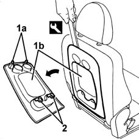

7050A17 oddment holder on central rear seat squab - r r
- Path
- Procedures > 70 FITTINGS > 7050 REAR SEATS > 7050A rear seat assembly > 7050A17 oddment holder on central rear seat squab - r r
- Kind
- repair procedure (removal / refitting; the operation number is the code)
- Applies to
- all engines; all production periods
- Interactive page
- https://sloeber94.github.io/elrnDB-fMltpl/en/#/2892244
Applies to: all engines; all production periods
 Removing
Removing
 Refitting
Refitting1. Remove the top retainers (1) of the oddment pouch (1b) using the special tool, and working on the side indicated.
 | Name | Country |
|---|---|---|
1 | Scraper blade | 1.878.077.000 |
2. Release the bottom retainers and remove the oddment pouch.

Applies to: all engines; all production periods
Refitting
RemovingCheck that the oddment pouch is undamaged.
Engage the bottom retainers of the oddment pouch on the squab.
Fit the oddment pouch top retainers.